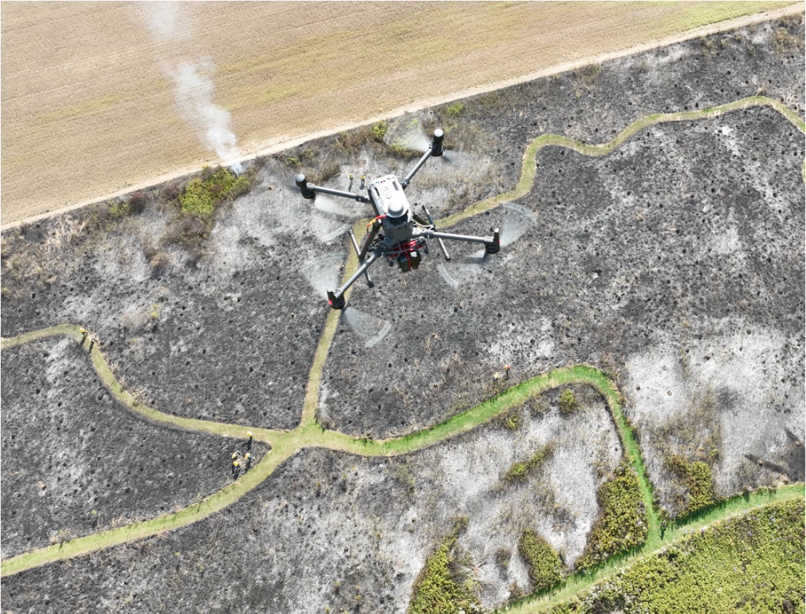
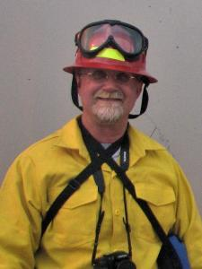

ICRA 2025 Workshop: Autonomy Under Duress – Robots in Wildland Fire
|  | AbstractThis workshop will showcase the cutting edge of research and practice in autonomous robotics for the management and control of wildland fire. Wildland fire management presents daunting challenges due to unstructured uncertainty, scale, and complex multiscale nonlinear interactions between the process and its environment. This workshop will bring together researchers and practitioners working to advance the integration of heterogeneous autonomous robots across all stages of wildland fire management through multidisciplinary work in guidance, navigation, control, sensing, computer vision, communications, novel design, security, high fidelity computation, operations, policy, and beyond. While deliberations will center on wildland fire resiliency, the scope of this forum will extend to broader questions concerning robotics and health of the wildland fire ecosystem and climate science. The following list provides broad areas of interest for technical content to be presented in the proposed workshop:
|
Confirmed Speakers
Bethany Hannah (The American Wildfire Experience)
Fatemeh Afghah Basar (Clemson)
Sebastian Scherer (CMU)
Natasha Neogi (NASA)
Derek A. Paley Yu (UMD)
Yannis Kantaros (WUSTL)
Nikolay Atanosov (UCSD)
Ningshi Yao (George Mason)
Workshop Structure
Our workshop is structured into four session types, each designed to encourage diverse perspectives and foster meaningful discussions:
Invited Talks – These sessions will provide attendees with insights into recent advancements and emerging trends from experts in the fields of communication-aware learning, planning, control, and game theory. Speakers will share cutting-edge research on how communication constraints influence decision-making in dynamic systems.
Lightning Talks – This session will feature concise, 10-minute presentations from researchers, allowing for a rapid exchange of innovative ideas. These talks are designed to provide a platform for a diverse set of voices, including early-career researchers, to share their work in a focused and engaging format, followed by brief Q&A discussions.
Panel Discussion – A moderated discussion featuring our invited speakers, where panelists will address key challenges and future directions in networked control, learning, and planning under communication constraints. The moderator will pose prepared questions, and the session will also include audience participation to facilitate dynamic and thought-provoking dialogue.
Poster Presentation - This session will provide the opportunity to early career researchers to present their breakthrough research in an informal setting and facilitate wide exachange of ideas
Organizers
Mrinal Kumar |
Xi Yu |
 |
Debdipta Goswami |
Amit Sanyal |
|  | Roger Williams |